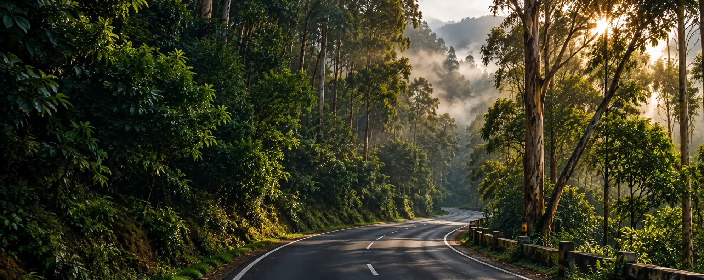
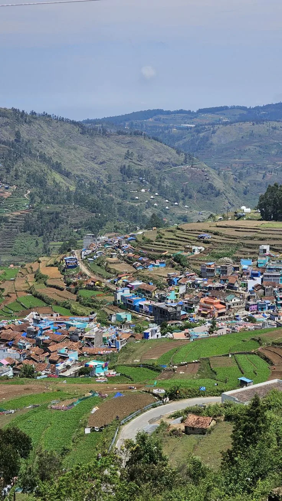
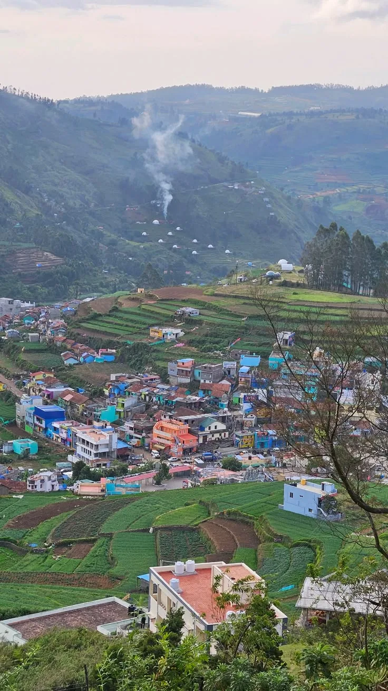
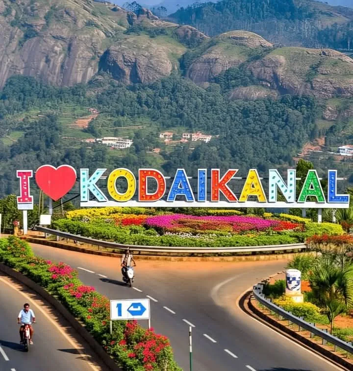

Landed at Coimbatore airport and the driver was already waiting with a name board. No haggling, no surprise charges — the fare matched exactly what was quoted on WhatsApp.

COIMBATORE KODAIKANAL
How to Travel from Coimbatore
to Kodaikanal by Cab?
The easiest way to cover the 180 km climb — private cab, door-to-door, on your own schedule.
Starting from ₹5,000 one-way · sedan to tempo traveller
500+
Trips Arranged
Coimbatore–Kodaikanal transfers booked and driven so far
Same-Day
Confirmation
Driver and fare confirmed the same day you enquire
Flight-Tracked
Airport Pickup
Delays adjusted for at no extra charge
Fare Sheet
How Much Does a Coimbatore to Kodaikanal Cab Cost?
Coimbatore → Kodaikanal, one-way starting fares by vehicle. Round trip and multi-day rates are quoted separately once we know your dates.
Most Booked
Innova
SUV · up to 7
₹7,500 one-way
Best for the ghat bends and family travel
Book Innova
Get Your Fare
Toll and hill-station entry charges, if any, are added at actuals.
What Travellers Say About This Route
We had two kids with us and the driver was happy to stop for breakfast near Palani and again for photos on the ghat road. Made the 4-hour climb feel easy.
Booked a Tempo Traveller for our group of 10 the same evening we messaged. Driver knew the ghat bends well, which mattered more than I expected.
Book in Minutes
How Can You Book a Coimbatore to Kodaikanal Cab?
COIMBATORE → KODAIKANAL
01
Pickup Location — airport, railway station or address in Coimbatore
02
Travel Date — and preferred pickup time
03
Vehicle — sedan, SUV or tempo traveller
04
Confirm — driver and fare confirmed the same day
180
KM
COIMBATORE KODAIKANAL
The Distance
How Far Is Coimbatore to Kodaikanal?
By road, Coimbatore and Kodaikanal sit about 180 km apart, most of it flat highway running southeast to Palani before the road turns uphill. The final stretch is the ghat section — around 20 km of switchbacks that gain most of Kodaikanal's 2,100 metre elevation in one go, which is why the last leg feels longer than the distance suggests.
On the Road
How Much Time Does the Journey Take?
Typical road journey: 4–5+ hours
A non-stop run in a private cab takes about 4 to 5 hours. Add a breakfast break near Palani or a photo stop on the ghat road and it stretches closer to 6 hours. Early-morning departures usually clear Coimbatore traffic fastest, while afternoon starts can run into slower ghat traffic during peak tourist season.
The Journey
Which Route Should You Take from Coimbatore to Kodaikanal?
One road covers the whole trip, but it changes character three times — plains, foothills, then a mountain climb into Kodaikanal itself.
Start — Coimbatore
Coimbatore to Palani
Open highway running southeast through Palladam, Tiruppur and Dindigul — the fastest, flattest stretch of the drive, and the easiest to make up time on if you start early.
Palani to the Ghat Base
The land starts folding into the Palani Hills here — a good stretch for a breakfast stop before the road narrows and starts climbing.
The Kodaikanal Ghat Section
Roughly 20 km of hairpin bends climbing through forest, gaining most of Kodaikanal's elevation — this is where a driver who knows the road matters most.
Kodaikanal Town
The ghat road opens out right at Kodaikanal Lake — usually the first major landmark you see on arrival, and worth a short boating or walking stop before your cab drops you directly at your cottage or hotel door.
End — Kodaikanal



Plain RoadsTwo Ways to Book
Can You Book a One-Way or Round-Trip Cab?
One Way
COIMBATORE
KODAIKANAL
Best for:
Travellers arriving from elsewhere who only need the drop to Kodaikanal, and will return a different way or on a later date.
Round Trip
COIMBATORE
KODAIKANAL
Best for:
Guests keeping the same cab and driver for the whole trip, with a fixed return date — usually the better rate per kilometre.

Direct Airport Transfer
Book Airport Pickup
Fly In, Drive Up
Is Coimbatore Airport to Kodaikanal Taxi Service Available?
Yes — Coimbatore International Airport (CJB) is one of our most common pickup points. Your driver tracks your flight, so a delay doesn't mean a missed pickup.
Arrive↓
Meet Your Driver↓
Load Your Luggage↓
Drive to Kodaikanal
Beyond the Transfer
Can You Book a Coimbatore to Kodaikanal Tour Package?
Yes — combine your cab with stay and sightseeing, from a single-day transfer-and-tour to a full three-day trip.
01
Day
↓
Transfer + Sightseeing
02
Days
↓
Transfer + Stay + Sightseeing
03
Days
↓
Transfer + Stay + Sightseeing
Most Booked
2-Day Kodaikanal Getaway
Transfer from Coimbatore, one night's stay, and a full day covering the lake, Coaker's Walk and Pillar Rocks — the pace most first-time visitors prefer.
Transfer
1 Night Stay
Sightseeing
Ask About This Package
Looking for a longer stay? See our 1-Day, 2-Day, 3-Day and group Kodaikanal packages:

Plan Around the Weather
Best Time to Travel to Kodaikanal
Each season on this route has a different character — here's what to expect before you book your dates.
Apr–Jun
Summer
Mild hill weather and the busiest travel season.
Jul–Sep
Monsoon
Heavy rain on the ghat road — drive with caution, as landslides are occasionally reported on this stretch.
Oct–Feb
Winter
Cool, clear and popular for long-distance mountain views.
A Day in Kodaikanal
Can You Explore Kodaikanal Sightseeing by Cab?
Yes — the same cab that brings you in can spend a full day on local sightseeing, at your pace rather than a fixed tour schedule.
09:00

Kodaikanal Lake
A slow lap around the star-shaped lake, ideal while the morning mist is still thinning over the water.
11:00

Coaker's Walk
A short cliffside walk with valley views on a clear day.
13:00
Lunch / Break
Your driver waits while you eat — no need to rush a meal to stay on schedule.
15:00

Pillar Rocks
Three granite cliffs rising straight out of the forest — one of Kodaikanal's most photographed viewpoints.
17:00
Green Valley View
A last stop before the light fades — the widest open view on the route back into town.
Once You're There
What Are the Best Places to Visit in Kodaikanal?
A short list of the stops most cab itineraries build around, from the lake at the centre of town to the quieter viewpoints just outside it.
Recommended First Stop
Kodaikanal Lake
The star-shaped lake at the centre of town, best walked in the early morning light.
Coaker's Walk
A cliffside path with clear-day valley views, an easy 15-minute stop.
Pillar Rocks
Three sheer granite cliffs, one of the most photographed spots in the hills.
 Pine Forest
Quiet forest trails near Vattakanal, a short detour from the main sightseeing loop.
Pine Forest
Quiet forest trails near Vattakanal, a short detour from the main sightseeing loop.
 Recommended Last Stop
Bryant Park
Manicured gardens in the town centre, an easy add-on before heading back.
Recommended Last Stop
Bryant Park
Manicured gardens in the town centre, an easy add-on before heading back.
Why a Cab
The journey is part of the trip.
01
Door-to-door travel
02
Flexible departure time
03
Comfortable, checked vehicles
04
Family-friendly journey
05
Suited to group travel
06
Flexible sightseeing stops
Questions
Frequently Asked Questions
01 · Distance
01How far is Coimbatore from Kodaikanal?
The road distance is about 180 km via Palani, which takes roughly 4 to 5 hours by cab depending on traffic and the ghat road.
02Which towns does the route pass through?
The drive runs through Pollachi or Palani (depending on the exact road taken), with Palani being the main midway stop before the ghat climb.
02 · Journey
03How long does the journey take?
Typically 4 to 5 hours non-stop. With a breakfast or photo stop, plan for closer to 5.5 hours.
04Is the ghat road safe at night?
It's driveable, but we recommend arriving before dusk where possible — the hairpin bends are easier to judge in daylight.
03 · Fare
05How much does the cab cost?
Fares start around ₹5,000 for an Etios, ₹7,000 for a Tavera or Qualis, ₹7,500 for a Jeep or Innova, ₹9,000 for a Tempo Traveller, and ₹10,000 for a 20-seater coach, depending on your travel date and vehicle availability.
06Is the fare different for a round trip?
Yes — round trips are usually a better per-kilometre rate since the same cab and driver stay with you for the return leg too.
04 · Booking
07How do I book a cab?
Share your pickup point, travel date and preferred vehicle over WhatsApp or by phone, and we confirm your driver and fare the same day.
08How far in advance should I book?
A day's notice is usually enough, though weekends and festival periods are safer booked a few days ahead.
05 · Airport
09Is airport pickup available?
Yes — Coimbatore International Airport (CJB) is one of our most common pickup points, with drivers tracking your flight.
10What if my flight is delayed?
Your driver tracks the flight status and adjusts pickup time accordingly, at no extra charge for reasonable delays.
06 · Vehicles
11What vehicles are available?
Sedans for up to 4 passengers, SUVs or Innovas for up to 7, and tempo travellers for groups of 9 to 17.
12Which vehicle is best for hill roads?
SUVs handle the ghat bends most comfortably for families or anyone prone to motion sickness, though sedans manage the route fine too.
07 · Packages
13Can I book a multi-day package?
Yes — one, two and three day packages combine your Coimbatore transfer with stay and sightseeing in Kodaikanal.
14What's included in the 2-day package?
Your transfer from Coimbatore, one night's stay, and a full day of sightseeing covering the lake, Coaker's Walk and Pillar Rocks.
One Last Step
Ready for Kodaikanal?
Coimbatore → Kodaikanal
One-way • Round-trip • Airport